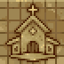

Church
The church is a location found in the Graveyard. It remains locked until Nun appears.
Sermon
Every , the Keeper can hold a sermon at the Church. Sermons spend and require . The lower of the two determines how many parishioners attend. After every sermon, based on the parishioners, they left  Faith and money.
Faith and money.
Repairs
After unlocking the Church, there are 4 blockages that must be cleared. Each blockage requires 1x  Bronze Detail, 1x
Bronze Detail, 1x  Board, and
Board, and  2 to be cleared.
2 to be cleared.
Blueprint Desk
Church Quality can be increased by placing various decorations. The following blueprints can be crafted at the Blueprint Desk in the Church:
 Church | ||||||||||||||||||||||||
|---|---|---|---|---|---|---|---|---|---|---|---|---|---|---|---|---|---|---|---|---|---|---|---|---|
|